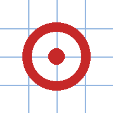

A quick map of Tasmania built on theLIST: tap anywhere to get coordinates, grid references, map book squares and the property address, all ready to copy or share. It works on a phone, and can keep maps for use without signal.
Every row has a Copy button. Copy all copies the visible rows plus a link back to this exact view. Share link opens your phone's share sheet (message, email, etc.).
| Row | What it is |
|---|---|
| Feature | Only when you tap a hydrant, dam, gate etc: what it is and its name or asset number. |
| Address | Property address of the land parcel under the pin (theLIST cadastre). More formats adds title (volume/folio), PID, tenure and area. |
| Lon, Lat / Lat, Lon | Decimal degrees, both orders, for whichever the other end wants. |
| MGA94 z55 | Easting and northing on the GDA94 grid. |
| Grid ref | 6-figure grid reference (100 m square). |
| Map book | Map book page and square, e.g. MB356 C4. |
| More formats | MGA2020, degrees-minutes-seconds and degrees-decimal-minutes. |
Type into the search box and press Enter (Go on a phone keyboard). It works out what you gave it:
| You type | It finds |
|---|---|
12 pillinger | An address. Only the start of the street name is needed; number, street type
and suburb are optional (12 Pillinger Drive, Fern Tree, 3/20 mount view cres).
Several matches give a pick list, nearest first. |
pillinger | The street; a pick list if there is more than one. |
265 522 | Grid reference (4, 6, 8 or 10 figures), taken in the 100 km square nearest the map view. The pin goes in the centre of the square. |
MB356 C4, 356c4 | Map book square. MB356 alone shows the whole page. |
147.3257, -42.8821 | Longitude, latitude (or the other way round - it can tell in Tasmania). |
526598 5252225 | MGA easting and northing (MGA94 unless labelled MGA2020). |
42 52 55.6 S 147 19 32.5 E | Degrees minutes seconds, or degrees and decimal minutes, with or without the symbols. |
Lines copied from the pin panel (for example Grid ref: 265 522 or Address: ...) can be pasted straight in.
Misspelt street names are not matched yet - try fewer letters (pill).
MGA grid lines, 1 km when zoomed in (10 km and 100 km further out), labelled where each line meets the edge of the screen like the margin of a paper map: small leading digits, bold two-digit kilometre number.
Property boundaries from zoom 15, house numbers at zoom 18 and street addresses at zoom 19. Outlines are white on the aerial photo, dark on other basemaps. Tapping the map looks up the parcel either way.
| H | TasWater hydrant (from zoom 16) |
| D R T P | TasWater dam, reservoir, tank, pump station (also B break pressure tank, W treatment plant) - from zoom 12 |
| D P | Tasmanian Irrigation dam (with outline) and pump station - from zoom 11 |
| G B | Gates and barriers from zoom 13: G gate, B boom gate, o bollard, F fence barrier, X immovable barrier, R removable barrier, # stock grid, ? unknown. Tap for name, status and managing authority. |
Tap any symbol to put the pin exactly on it.
Read eastings first, then northings. For a 6-figure reference take the bold two-digit number of the grid line to the left, add tenths across the square, then do the same up from the line below. The pin panel always shows the reference for the pin, so you can check your reading.
Without signal the map, GPS dot, grid, coordinates, grid references and coordinate go-to all keep working. Addresses, parcels, water and gates are also remembered for places you looked at while online; new searches need signal. Clear saved removes the stored maps.
It then opens full screen from its own icon, and works offline for saved areas.